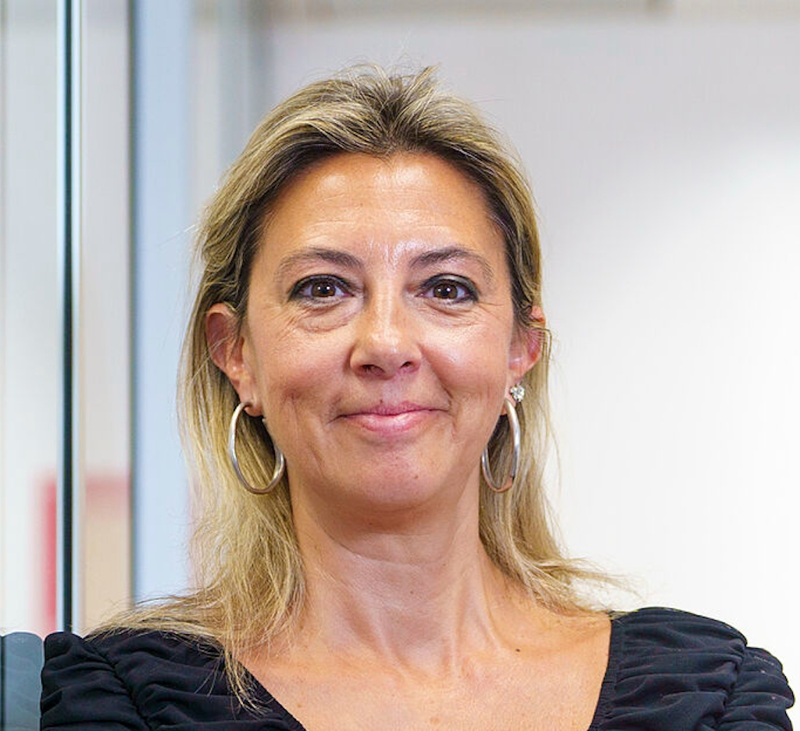
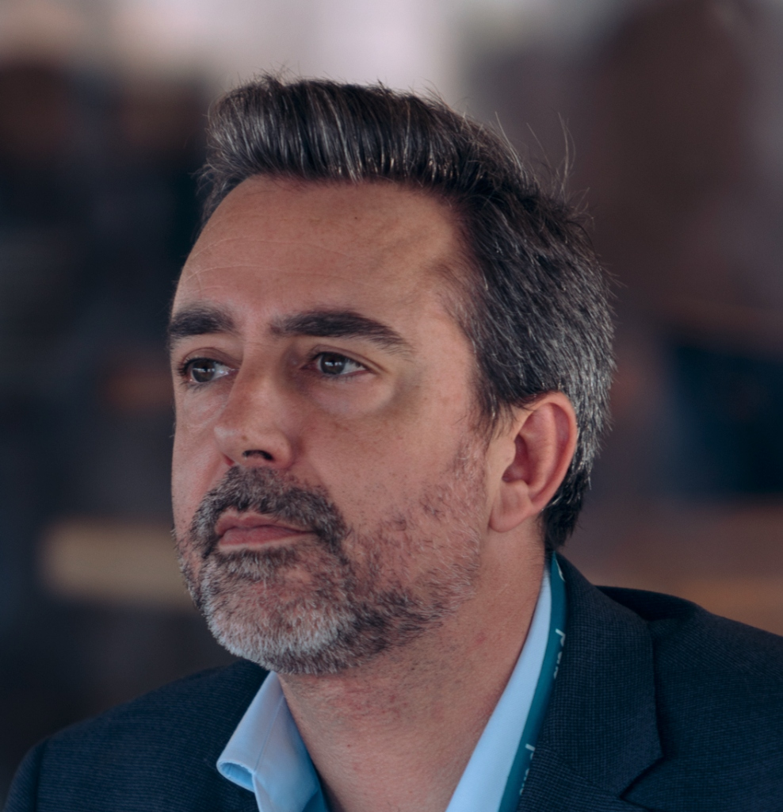

Líderes de la transformación
La transformación se impulsa desde el liderazgo: desde cómo los directivos interpretan, deciden y actúan en entornos de creciente complejidad. El coaching ejecutivo actúa como catalizador de este proceso al trabajar en los niveles menos visibles donde se produce el cambio sostenible. Todo ello en contextos empresariales exigentes, marcados por la presión, la ambigüedad y la necesidad de tomar decisiones críticas.
En este escenario, la inteligencia artificial redefine el contexto, pero también eleva el nivel de exigencia, haciendo imprescindible un liderazgo más consciente, sólido y profundamente humano.
A lo largo de la jornada, abordaremos la transformación desde tres ángulos clave:
- El liderazgo en contextos de alta exigencia
- La aplicación real en empresa
- El impacto de la tecnología y la inteligencia artificial en la práctica del coaching ejecutivo
Pero más allá de las tendencias, este encuentro pone el foco en una cuestión crítica: qué permanece, qué evoluciona y qué exige ser replanteado en el desarrollo del liderazgo. Un espacio diseñado no solo para compartir ideas, sino para generar criterio y conectar con actores clave del sector.
El punto de encuentro
I Salón Internacional de Coaching Ejecutivo reúne a quienes están trabajando en primera línea del cambio real dentro de las organizaciones.
Speakers
Contaremos con profesionales referentes del sector

John Leary-Joyce
Reino Unido

Juan Carlos Cubeiro
España

Virginia Molet
Organizadora

Andy Prior
Francia

Borja Manero
España

Cris Bolívar
España

Pilar Llácer Centeno
España

Alejandro Santos Sáez
España
Agenda
| Horario | Tema | Ponente |
|---|---|---|
| 09:30 - 10:00 | Apertura | Virginia Molet, Directora de la Academy of Executive Coaching (AoEC) en España |
| 10:00 - 11:00 |
Se puede desarrollar el liderazgo sin coaching?
Ver detalle de la ponenciaJuan Carlos abordará una pregunta clave para el desarrollo directivo actual: si es posible desarrollar el liderazgo sin coaching. Su intervención partirá de una idea central: el liderazgo ha cambiado profundamente y, en un contexto de transformación acelerada, su importancia es mayor que nunca. La sesión explorará qué significa hoy ejercer un nuevo liderazgo: más antifrágil, íntegro, reputado y capaz de combinar firmeza compasiva con visibilidad humilde. También revisará el debate entre si el líder nace o se hace, diferenciando entre temperamento, carácter, personalidad e inteligencia ejecutiva. Desde ahí, conectará el coaching con el desarrollo del liderazgo que necesitan las organizaciones actuales y con la forma en que hemos cambiado como profesionales, equipos y sociedad. |
Juan Carlos Cubeiro, Premio Nacional de Management y Director de Amrop |
| 11:00 - 11:45 |
Impulso acelerado de la IA para ejecutivos/ Rapid AI tranction for executives (inglés)
Ver detalle de la ponenciaAndrew abordará el papel de la inteligencia artificial generativa en los equipos directivos y el reto que supone pasar de la experimentación al despliegue real dentro de las organizaciones. La sesión pondrá el foco en cómo decidir dónde aporta valor la IA, cómo integrarla de forma responsable y qué conversaciones necesitan tener los líderes para acompañar esta transformación. También explorará el papel que puede jugar el coaching ejecutivo en este contexto: ayudar a los equipos de liderazgo a pensar mejor, tomar decisiones más conscientes y desarrollar las capacidades necesarias para guiar a sus organizaciones en un entorno tecnológico cada vez más complejo. |
Andrew Prior, Learning Facilitator en MIT Professional Education y Professor of leadership at Eurecom |
| 11:45 - 12:30 | Pausa café | |
| 12:30 - 13:30 | Managers: los verdaderos dueños (o asesinos) del cambio | Panel con senior líderes |
| 13:30 - 14:00 |
Competitividad en tiempos de disrupción: el liderazgo como ventaja estratégica
Ver detalle de la ponenciaAlejandro hablará de la competitividad empresarial en un contexto de disrupción constante, donde la ventaja ya no depende solo de la tecnología, los costes o el mercado, sino de la calidad del liderazgo. Su intervención pondrá el foco en la capacidad de los líderes para anticipar, decidir mejor, generar confianza, atraer talento y movilizar a la organización. También abordará cómo la inteligencia artificial está acelerando el cambio en todos los sectores, y por qué las empresas más competitivas serán aquellas que sepan convertir la tecnología en valor real a través de cultura, talento, propósito y liderazgo estratégico. |
Alejandro Santos Sáez, director de APD Zona Centro. |
| 14:00 - 15:15 | Pausa para comer | |
| 15:15 - 15:45 |
El gran malentendido de la comunicación
Ver detalle de la ponencia¿Qué tienen en común un físico del CERN y un actor del Centro Dramático Nacional? Que son la misma persona, y que su historia dice mucho sobre cómo entendemos la comunicación. En esta charla, Borja Manero desmonta una idea muy extendida: que comunicar bien consiste, ante todo, en hablar bien. También explora por qué tantos aprendimos antes a callarnos que a abrir la boca. Una invitación a revisar el miedo, el perfeccionismo y el camino hacia una forma de comunicar más propia y conectada. |
Borja Manero, cofundador de Elipsis y codirector del grupo Arts and Technologies in Leadership en el Real Colegio Complutense en Harvard. |
| 15:45 - 16:15 |
Coaching para el Ser del líder: reconectando con las Metacompetencias
Ver detalle de la ponenciaCris hablará de cómo el coaching puede acompañar al líder más allá del desarrollo de competencias técnicas, cognitivas o emocionales. Su intervención pondrá el foco en las metacompetencias del ser: autenticidad, presencia, confianza genuina, sabiduría y capacidad de liderar desde un lugar más consciente. La sesión invitará a revisar qué necesita hoy un líder para generar equipos más cooperativos, competentes y preparados para actuar en entornos de alta incertidumbre y complejidad. |
Cris Bolívar, Presidenta de EMCC España, Filósofa, Psicóloga y Consultora Máster |
| 16:15 - 16:45 | Pausa café | |
| 16:45 - 17:30 |
Competencias humanas frente a la inteligencia artificial
Ver detalle de la ponenciaPilar abordará los grandes desafíos del presente en un momento marcado por el avance de la inteligencia artificial y por la necesidad de reforzar aquello que sigue siendo profundamente humano. Su intervención pondrá el foco en las competencias que serán más relevantes en este nuevo contexto: la capacidad de aprendizaje, la escucha, el criterio y la conexión con el sentido. La sesión invitará a reflexionar sobre por qué aprender se ha convertido en una competencia estratégica, y sobre la diferencia entre escuchar de verdad y limitarse a responder. Desde ahí, conectará tecnología, humanidad y propósito para plantear una pregunta de fondo: qué lugar queremos ocupar como personas y como líderes en un mundo cada vez más automatizado. |
Pilar Llácer, Senior Advisor en Newlink. Doctora en Filosofía con especialización en Ética e Inteligencia Artificial. Escritora |
| 17:30 - 18:30 |
Más allá de la IA: lograr resultados a través de la relación de coaching/ Beyond AI. Achieving results through the coaching relationship (inglés)
Ver detalle de la ponenciaJohn explorará qué hace que el coaching con un coach humano siga siendo profundamente relevante en un momento en el que la inteligencia artificial puede replicar muchas conversaciones racionales. Su intervención se centrará en la relación de coaching como espacio vivo, emocional y experiencial. A través de su enfoque, mostrará cómo lo que ocurre en el momento presente de la sesión permite trabajar con patrones, emociones y dinámicas reales que no siempre aparecen en una conversación puramente analítica. La sesión pondrá el foco en el valor transformador de la relación entre coach y coachee. |
John Leary-Joyce, CEO de la Academy of Executive Coaching (AoEC) |
| 18:30 - 19:30 | Evento abierto: cómo convertirse en coach ejecutivo acreditado / Becoming an Accredited Executive Coach (inglés y español) | Virginia Molet y John Leary-Joyce |
| 19:30 - 19:45 | Closing | Virginia Molet, Directora de la Academy of Executive Coaching (AoEC) en España |